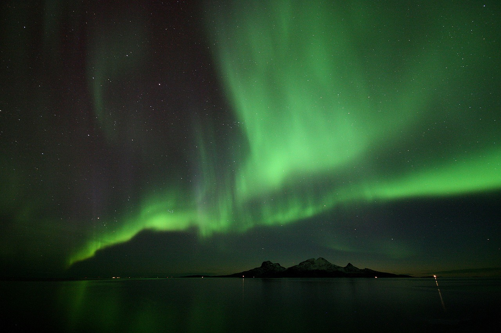
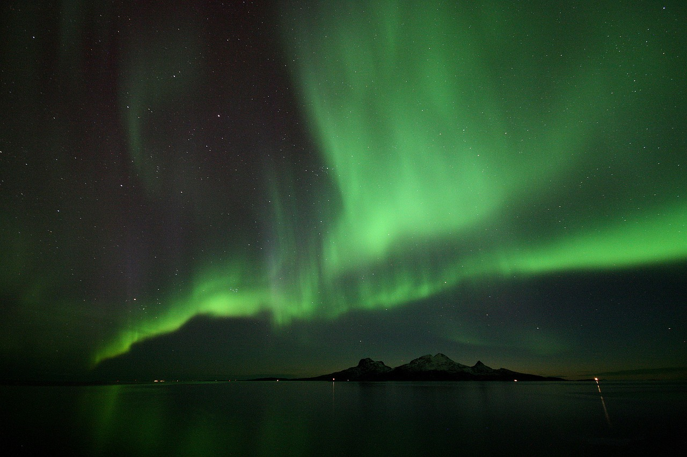
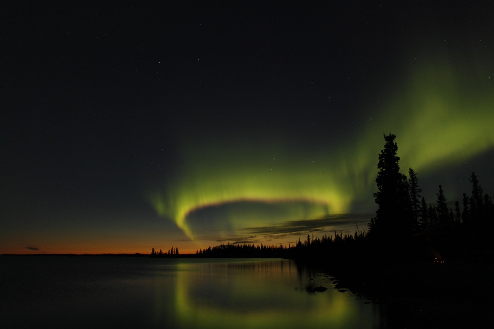
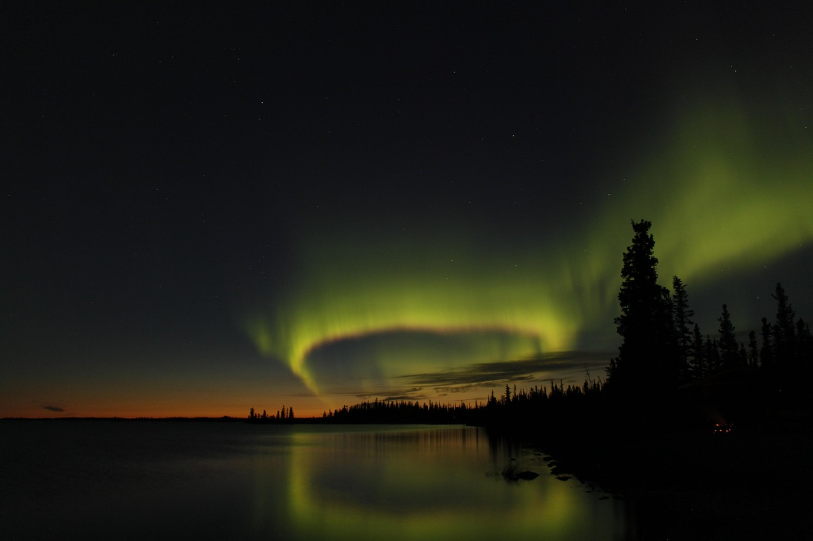
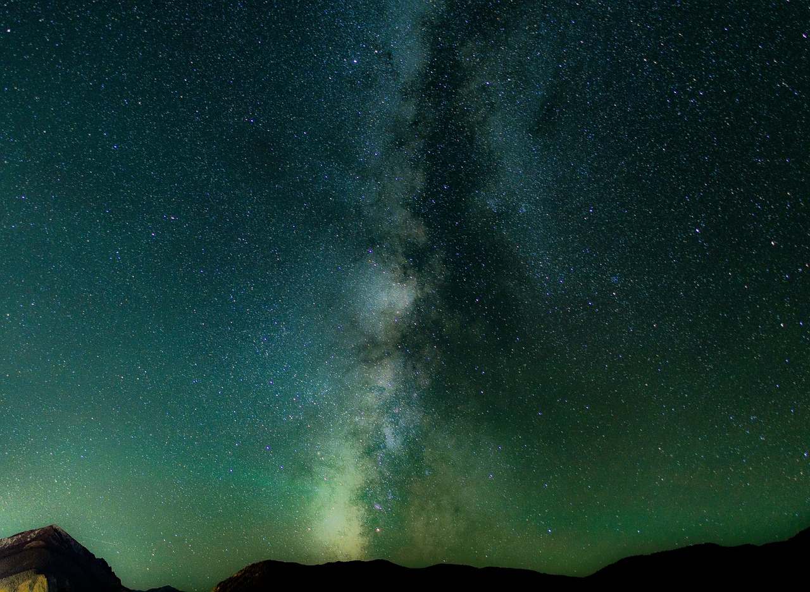
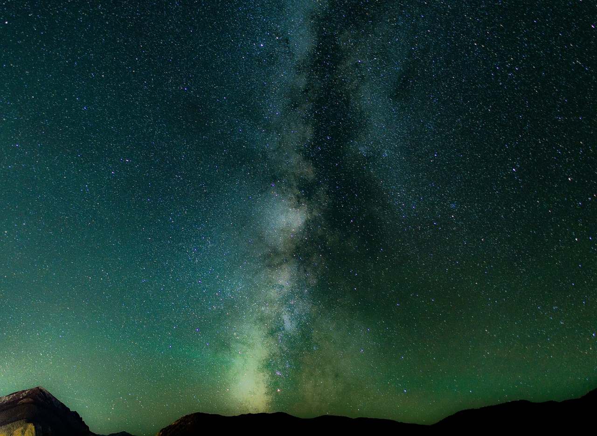

Transition
exercise 1.1 : transition
exercise 1.1 : transition


exercise 1.2 : 2D transforms


exercise 1.3 : 3D transforms
 

exercise 1.4 : keyframe animation
 

exercise 1.5 : SVG animation
 

Cube demo
SPA : The Spider-verse